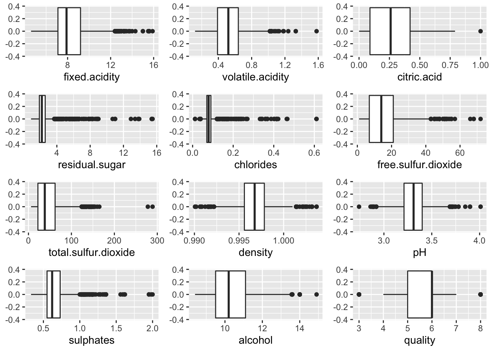

Chapter 5 Results
## fixed.acidity volatile.acidity citric.acid residual.sugar chlorides free.sulfur.dioxide total.sulfur.dioxide density pH
## 1 7.4 0.70 0.00 1.9 0.076 11 34 0.9978 3.51
## 2 7.8 0.88 0.00 2.6 0.098 25 67 0.9968 3.20
## 3 7.8 0.76 0.04 2.3 0.092 15 54 0.9970 3.26
## 4 11.2 0.28 0.56 1.9 0.075 17 60 0.9980 3.16
## 5 7.4 0.70 0.00 1.9 0.076 11 34 0.9978 3.51
## 6 7.4 0.66 0.00 1.8 0.075 13 40 0.9978 3.51
## sulphates alcohol quality
## 1 0.56 9.4 5
## 2 0.68 9.8 5
## 3 0.65 9.8 5
## 4 0.58 9.8 6
## 5 0.56 9.4 5
## 6 0.56 9.4 5Lets create a new column quality_category to indicate whether a wine is good (quality > 6), or average (quality = 5 or 6), or poor (quality < 5)
Let's first plot the histogram of every variable.
From the histogram, there are several things we observed: 1. Density, pH, volatile acidity are normally distributed. 2. Chlorides and residual sugar have low variance. 3. Alcohol level, fixed acidity, free sulfur dioxide, sulphates, and total sulfur dioxide are right skewed. 4. Citric acid has a plateau distribution. 5. Most wine has quality of 5 and 6.

From the boxplots, we have the following observations: 1. Every variable has outliers. 2. The median of our dependent variable - quality is 6.
In order to discover the relationships between each variable, let's show the heatmap of correlation matrices.


From the heatmap, the variables that have high correlation with quality are alcohol, volatile acidity, sulphates, citric acid, and Next, let's take a look at some bavariate graphs of these variables.
Alcohol has the strongest correlation with quality in our dataset. And from this graph, we can clearly see this relationship. Better wines have a high alcohol percentage. It is either because strong wines are more tasty or people who rates wines are wine lovers and they favor strong wines.
From the graph above, we can tell that volatile acidity has a negative relationship with quality. Better wines tend to have lower median of volatile acidity.
Sulphates seems to have positive relationship with quality. Better wines have higher median of sulphates level.
Citric acid seems to have positive relationship with quality. Better wines have higher median of citric acid level.
Then, let's study how the combination of two variables affect quality by looking at some multivariate graphs.
From the graph above, wee can see that good wines have higher alcohol and low volatile acidity levels than the other two groups with some outliers. The wine with the highest alcohol level scored only a 5 in quality. Also, the poor wines seem to have a dispersed distribution suggesting that people are consistent in the standards of good wines but inconsistent in the standards of poor wines.

This graph is interesting because it shows that most wines that have high chlorides level are categorized as average wines. This pattern suggests that chlorides may have a non-linear relationship with quality.

This graph supports our theory before that people have consistent standards of good wine and inconsistent standards of poor wines. Because all good wines are clustered in the lower left corner of the graph and poor wines have dispersed distribution.